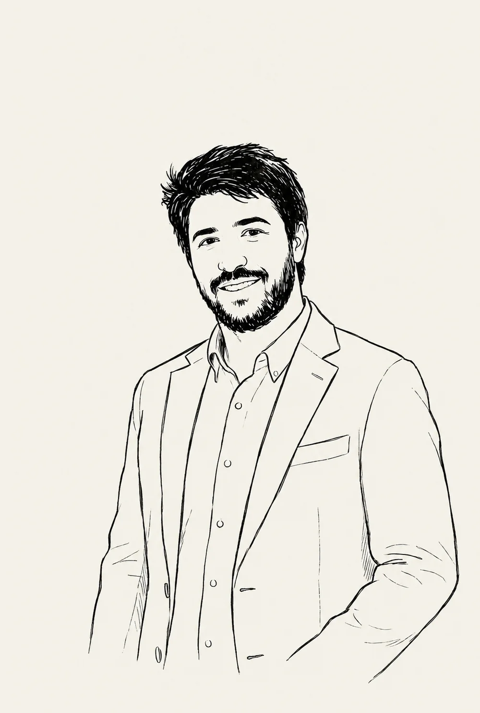
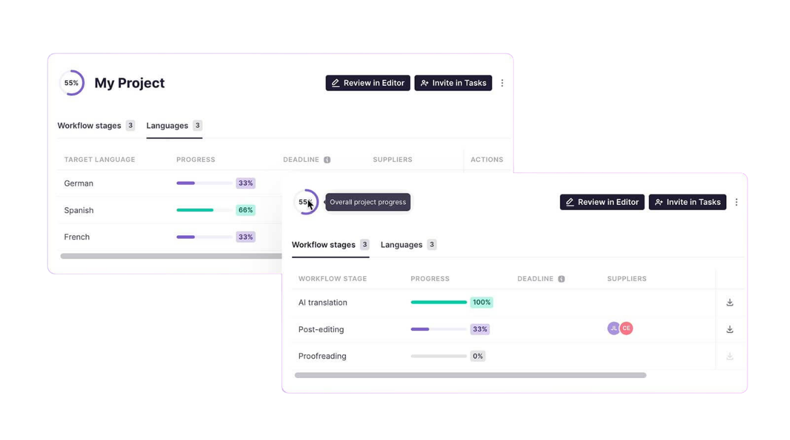
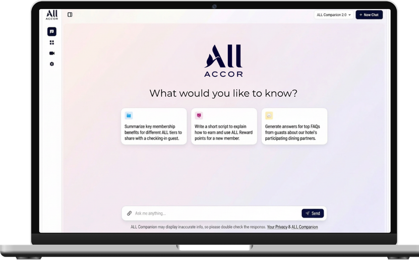

J'accompagne les organisations sur leurs enjeux de performance en combinant diagnostic, ingénierie de la formation et IA appliquée.

Automatisation de la localisation de contenus dans plus de 10 langues.

Assistant IA métier pour les équipes Front Office.
Entraînement conversationnel IA pour développer les ventes ALL.
Parcours d’onboarding digital déployé dans 10 pays.